L’intelligence d’affaires chez Co-operators
Présentation dans le cadre du cours « Applications probabilistes des risques actuariels »
7 octobre 2025
Mon parcours
Académique
Baccalauréat
- Actuariat
- 2 stages chez Intact
- Session à l’étranger à Lyon
Maitrise
- Mathématiques actuarielles et financières
- Mémoire: Techniques de gradient boosting pour la modélisation des réserves individuelles en assurance non-vie
- Stage de recherche Mitacs chez Desjardins
Doctorat
- Mathématiques
- Thèse: Modélisation des sinistres en assurance automobile avec l’utilisation de données télématiques : approches d’apprentissage automatique en classification et régression de comptage
- Chaire Co-operators en analyse des risques actuariels
Professionel
- Chercheur scientifique dans l’équipe « Recherche et Innovation Analytique » depuis septembre 2023.
1. Introduction à l’assurance de dommages, l’intelligence d’affaires, et Co-operators
Assurance de dommage
- Aussi appelée « assurance IARD » (Incendie, Accidents et Risques Divers) c’est un type d’assurance qui protège les individus et les entreprises contre les pertes financières liées à leurs biens et à leur responsabilité pour les dommages qu’ils peuvent causer à autrui.
- En anglais, Property & Casualty (P&C) insurance (property = « biens », casualty = « responsabilité »).
Biens
- Assurance habitation: protège contre les incendies, vols, catastrophes naturelles, etc.
- Assurance automobile: protège contre les dommages au véhicule pour collision, incendies, vols, vandalisme, etc.
- Assurance de biens commerciaux: protège le bâtiment, le contenu, etc.
Responsabilité
- Assurance responsabilité civile: protège contre la responsabilité pour les blessures ou les dommages qu’ils peuvent causer à autrui
Assurance de dommage
Qu’est-ce qu’on fait en assurance de dommage?
Rôles « traditionnels »
- Tarification
- Indiqués
- Segmentation
- Évaluation des réserves
- IBNR (Incurred But Not Reported)
- RBNS (Reported But Not Settled)
- Réassurance
Rôles « non-traditionnels »
- Intelligence d’affaires
- Analytique des réclamations
- Analytique de la souscription
Co-operators
- Coopérative d’assurance de dommage fondée en 1945 par un groupe de fermiers 🧑🌾
Notre mission
- Assurer la sécurité financière des Canadiennes et Canadiens et de nos collectivités. Parce que nous sommes une coopérative, nos décisions d’affaires sont guidées par nos valeurs d’inclusion et de développement durable et responsable.
Exemples d’engagements concrets
- Investissements dans des fonds verts🌳💰
- Assurance innondation🌊
- Programme « Build Back Better »🏗️
- Programme de séchage lors de dégâts d’eau spécifiques💧
Qu’est-ce que l’intelligence d’affaires?
Intelligence d’affaires = Tirer de la valeur des données
Les données ne parlent pas d’elles-mêmes: il faut les faire parler.
Avec…
- Programmation R/Python (et autres)
- Machine learning/Deep learning
- Traitement de langage naturel
- Théorie des valeurs extrêmes
- Modèles de catastrophes
- Modèles statistiques classiques
- Etc.
…on produit
- Modèles
- Tableaux de bord
- Applications Shiny (ou autre)
- Visualisations
- Analyses statistiques
- Etc.

2. Exemple de projet
Sélecteur de codes IBC
Problème à résoudre en assurance commerciale
- Lorsqu’on souscrit une police d’assurance commerciale, on doit lui assigner un code parmi 1260 codes. Étant donnée une description d’entreprise, on doit assigner le bon code.
- Par exemple, quel code doit-on assigner à l’entreprise décrite par Small place where they serve coffee and food such as pastries?
Données
IBC Codes
| Index | IBC Code | IBC Code Description |
|---|---|---|
| 1 | 0735a10 | Architects - Landscaping Only |
| 2 | 8916a10 | Engineers |
| 3 | 8075a10 | Sanitariums |
| 4 | 5813a10 | Coffee shops (warming of food only, no roasting of beans) |
| … | … | … |
| 1260 | 3496a10 | Electronic games |
Entreprises
| Index | Company Description | IBC Code |
|---|---|---|
| 1 | Takeout meals-see policy, coding only | 5814a10 – Take out meals |
| 2 | Construction of church building extension | 1830a20 – Building construction - general contr. |
| 3 | Construction and renovation of gas stations including installation and removal of underground tanks and related pumps, carwash facilities. Snow clearing. | 1782a40 – Underground storage tank - remediation contractors |
| … | … | … |
| 136 000 | Licensed Restaurant | 5812a10 – Restaurants - licensed (Not liquor revenue) |
Sélecteur de codes IBC
Embeddings = Encoder une phrase (ou un mot) avec un vecteur de nombres réels
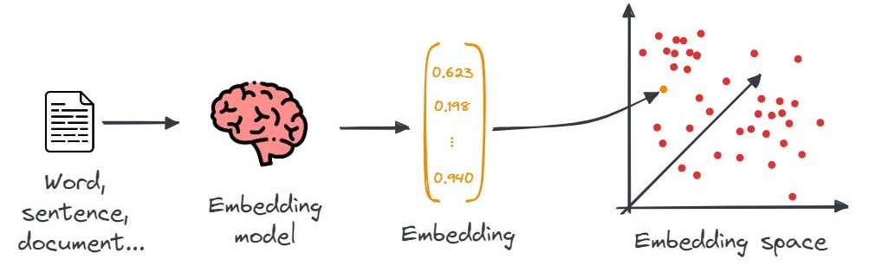Les mots/phrases similaires doivent être proches dans l’espace d’embedding.
Sélecteur de codes IBC
Espace d’embedding
- Un bon modèle d’embedding va positionner les mots (ou phrases) de sens similaire « près » les uns des autres dans l’espace d’embedding.
- Dans cet exemple, nous avons un embedding en 2 dimensions, mais en pratique, les embeddings possèdent généralement un nombre beaucoup plus élevé de dimensions.
Sélecteur de codes IBC
« Interprétation » des dimensions
- Les valeurs des embeddings peuvent être imaginées étant des « concepts ».
- Par exemple, une des dimensions pourraient être le degré de « félinité ».
- En pratique, ces concepts sont obscures et pas humainement identifiables.
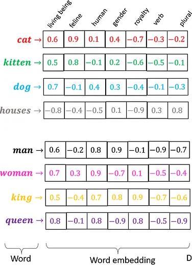
Sélecteur de codes IBC
BERT: fournit des embeddings de mots contextualisés de haute qualité
- BERT: Bidirectional Encoder Representations from Transformers
- Développé par Google en 2018
Pré-entrainé sur beaucoup de texte
- BERT base: BooksCorpus (~800M mots)
- BERT large: Wikipédia anglais (~2500M mots)
- Permet d’obtenir de bonnes performances même sans fine-tuning
Embeddings contextualisés
- Contexte bidirectionnel
- D’anciens modèles comme Word2Vec et GloVe ne prenaient pas du tout en compte le contexte
Open-source
- On peut le télécharger gratuitement sur HuggingFace.co
- On peut le fine-tuner sur une tâche particulière
Sélecteur de codes IBC
Pré-entrainement
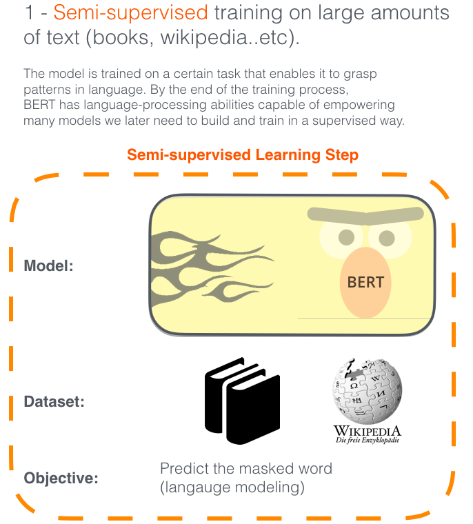
Fine-tuning
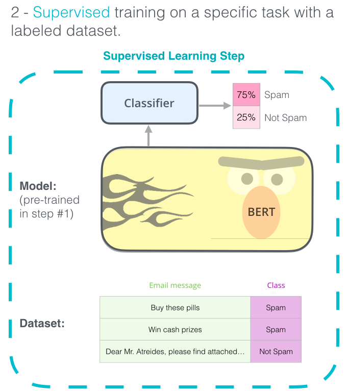
Sélecteur de codes IBC
Fine-tuner le modèle pré-entrainé
On génère d’abord des paires positives et des paires négatives.
- paire positive: description de l’entreprise + description de son IBC code correspondant
- paire négative: description de l’entreprise + description d’un IBC code non-correspondant
| Pair ID | Company Description | IBC Code Description | Label |
|---|---|---|---|
| 1 | Construction of church building extension | Building construction - general contr. | Positive pair |
| 2 | Construction of church building extension | Take out meals | Negative pair |
| 3 | Licensed restaurant | Restaurants - licensed (Not liquor revenue) | Positive pair |
| 4 | Licensed restaurant | Building construction - general contr. | Negative pair |
| … | … | … | … |
On va ensuite entrainer le modèle à rapprocher les paires positives et à éloigner les paires négatives en utilisant une fonction de perte et la descente de gradient.
Sélecteur de codes IBC
Fonctionnement du modèle
Partons avec cette description d’entreprise cible:
Small place where they serve coffee and food such as pastries
Comment procède-t-on pour suggérer des codes IBC?
- On obtient un embedding représentant la description d’entreprise cible en utilisant notre modèle fine-tuné.
- On a préalablement fait de même pour les 136 000 entreprises de notre jeu de données.
- On calcule la distance entre l’entreprise cible et toutes les entreprises de notre jeu de données.
- On trouve les k entreprises les plus proches (algorithme des \(k\) plus proches voisins).
- On suggère les codes les plus fréquents dans les \(k\) entreprises voisines.
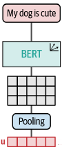
Sélecteur de codes IBC
Application Shiny
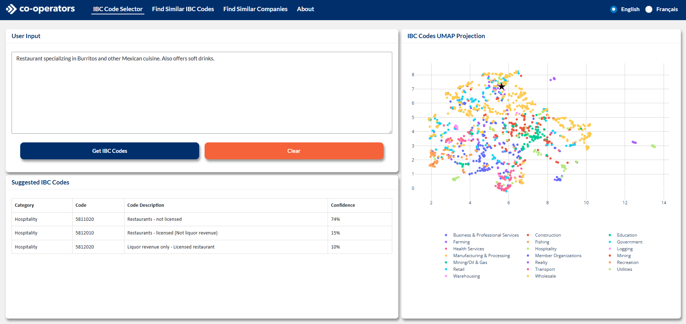Sélecteur de codes IBC
Architecture de BERT: une pile d’encodeurs « transformer »
- BERT est un réseau de neurones composé de 12 ou 24 modules de type « transformer ».
- BERT « base »: 110 millions de paramètres.
Transformer (ENCODER)
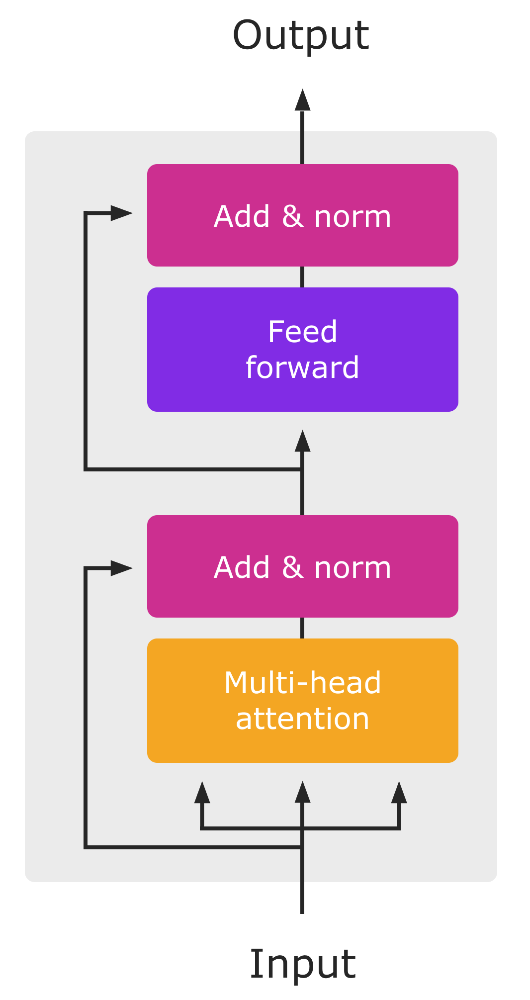
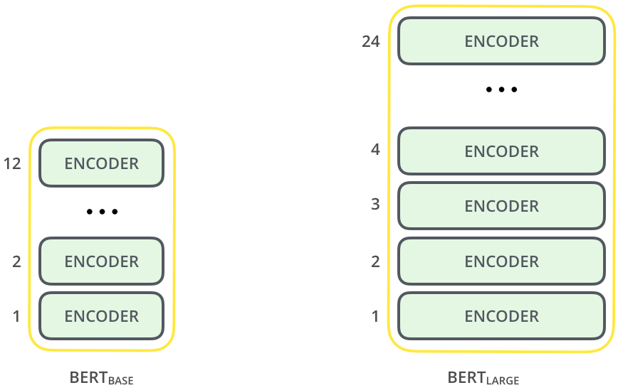
Sélecteur de codes IBC
Mécanisme d’attention: permet de contextualiser les embeddings
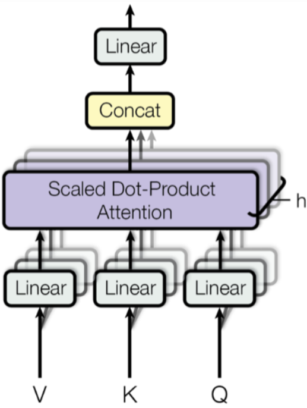
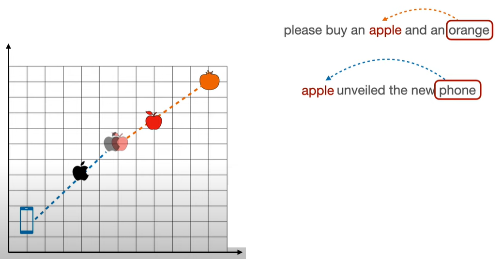
Sélecteur de codes IBC
Sentence-BERT: modifier BERT pour encoder des phrases au lieu des mots
- Architecture siamoise à l’entrainement utilisant un modèle BERT pré-entrainé (les poids sont identiques dans les 2 blocs BERT).
- La couche de pooling permet d’obtenir un embedding de phrase à partir des embeddings de mots.
- Entrainé sur le corpus SNLI: 570 000 paires de phrases annotées contradiction, implication ou neutre.
À l’entrainement
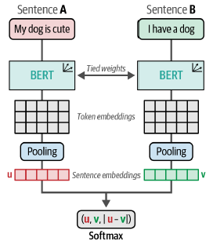
À l’inférence
Figures tirées de Hands-On Large Language Models – Jay Alammar et Maarten Grootendorst»
Sélecteur de codes IBC
Télécharger le modèle pré-entrainé
| Phrase | dim_1 | dim_2 | … | dim_768 |
|---|---|---|---|---|
| That is a happy person | -0.0203 | -0.0104 | … | -0.0053 |
| That is a happy dog | -0.0196 | -0.0323 | … | -0.0274 |
| That is a very happy person | -0.0136 | 0.0043 | … | -0.0054 |
| Today is a sunny day | -0.0075 | -0.0023 | … | 0.0078 |
On peut tester le modèle ici.
Imagerie
Estimer le coût de reconstruction des maisons.
Précision de +/- 50k$
Cartes d’inondations
Améliorer les cartes d’inondation fournies par JBL, car celles-ci « pensaient » que les forêt sont des blocs qui ne laissent pas passer l’eau.
Avant
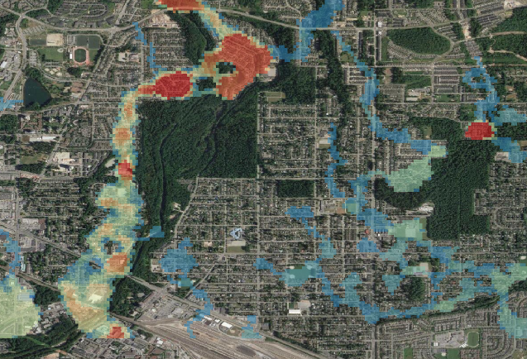
Après
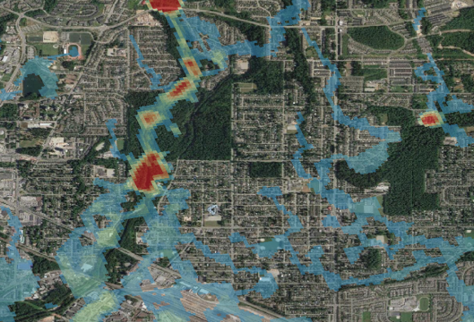
Autres projets
- Développer un modèle de tarification télématique pour le nouveau produit d’assurance télématique.
- Développer une application Shiny se basant sur le simulateur d’innondations pour mieux gérer notre risque de concentration.
- Améliorer le processus des indiqués en utilisant la théorie des valeurs extrêmes pour estimer une période de retour pour les grosses réclamations.
- « Fuzzy matching » pour l’équipe d’analytique de fraudes.
Les défis de l’industrie
Dans aucun ordre particulier:
- Fraude
- Catastrophes naturelles: inondations, séismes, feux de forêt, etc.
- Modélisation des grosses pertes
- Assurance télématique
- Traitement de langage naturel
- Etc.